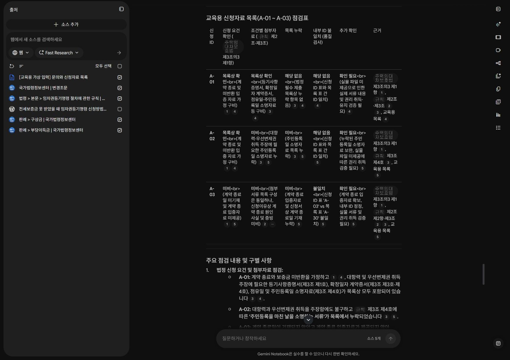
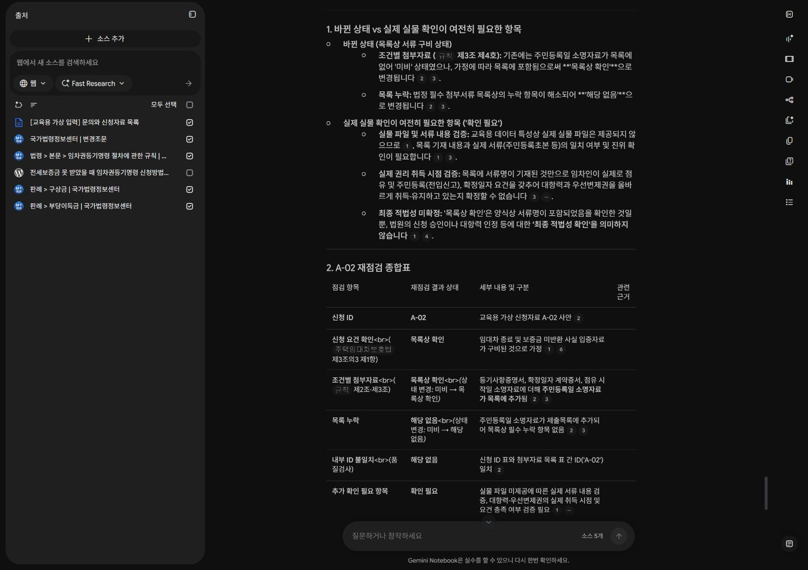

실습C · 60분
05 · 서류 목록 점검하기
공식 규칙에서 점검 기준을 찾고, 가상 제출목록과 대조합니다. 목록 확인과 실물 검토를 구분합니다.
이 페이지에서 · 바로 이동
완성할 것: 누락·불일치·확인 필요 점검표
가상 제출목록 A-01~A-03 받기1
규칙에서 조건별 항목 찾기
공식 자료 4개와 가상 입력을 선택하고 블로그는 해제합니다. 규칙 제2조·제3조를 열어 기재사항과 첨부서류를 구분하세요.
- 예상 상태
- 선택 자료 5개. 점검 기준이 공식 규칙에서 나옵니다.
- 직접 확인
- 등기된 주택인지, 이미 취득했다고 주장하는 권리가 무엇인지에 따라 필요한 자료가 달라집니다.
- 막혔을 때
- 모든 서류를 모든 신청에 일괄 필수로 요구하면 규칙의 각 호별 조건을 다시 분리합니다.
2
3건을 따로 점검하기
아래 질문을 실행합니다. A-01~A-03이 별개 행으로 나오도록 하고 교육용 ID 대조는 법정 요건과 분리합니다.
- 예상 상태
- A-02의 목록 누락, A-03의 종료 확인 부족과 ID 불일치가 표시됩니다.
- 직접 확인
- A-01도 “승인”이 아니라 목록상 확인과 실물 추가 확인으로 표시해야 합니다.
- 막혔을 때
- 날짜나 ID를 추정하면 원문값을 먼저 표로 추출하게 한 뒤 점검을 다시 요청합니다.
임차권등기명령 절차에 관한 규칙 제2조·제3조와 주택임대차보호법 제3조의3 제1항을 기준으로 교육용 목록 A-01, A-02, A-03을 각각 점검해. 신청 ID / 신청 요건 확인 / 조건별 첨부자료 / 목록 누락 / 내부 ID 불일치 / 추가 확인 / 근거를 표로 작성해. 상태는 목록상 확인·미비·불일치·확인 필요·해당 없음으로 구분해. 목록에 있다고 실제 서류 내용과 권리 취득이 확인된 것은 아니야. 법정 요건과 교육용 ID 품질검사를 분리하고 접수 가능·승인 여부는 판단하지 마.
직접 실행한 화면화면 확대 ↗


계정 영역을 잘랐습니다. 확대하면 원본 크기로 읽을 수 있습니다.
원본 대조 기준 · 교육용 확인표
| 입력 | 직접 찾을 내용 | 판정의 한계 |
|---|---|---|
| A-01 | 가정된 조건에 맞는 자료가 목록에 있음 | 실물 미제공. 기재 내용·효력·진위는 확인 필요 |
| A-02 | 주민등록일 소명자료가 목록에 없음 | 해당 주장 조건의 자료 미비를 표시 |
| A-03 | 계약 종료일·입증자료 없음, A-03 / A-30 불일치 | 종료 요건은 확인 필요. ID 차이는 교육용 품질검사 |
3
누락 자료 추가 후 다시 점검하기
아래 변경 조건을 적용해 A-02만 재점검합니다. 원본 자료는 수정하지 않습니다.
- 예상 상태
- 주민등록일 소명자료가 목록상 확인으로 바뀝니다.
- 직접 확인
- 실물 미제공 상태가 여전히 남는지 확인합니다.
- 막혔을 때
- 원본 제출목록이 바뀐 것으로 답하면 “교육용 가정의 변경판”이라고 다시 명시합니다.
교육용 변경 조건: A-02의 주민등록일 소명자료가 추가되어 제출목록에 포함되었다고 가정해. 원본은 수정하지 말고 A-02만 재점검해. 바뀐 상태와 실제 실물 확인이 여전히 필요한 항목을 구분해. 목록상 확인을 최종 적법성 확인으로 바꾸지 마.
직접 실행한 화면화면 확대 ↗


계정 영역을 잘랐습니다. 확대하면 원본 크기로 읽을 수 있습니다.
저장하고 업무에 연결하기
점검표를 복사해 기관이 허용한 문서 도구에 저장합니다. 실제 보증이행 검토에 적용하려면 해당 업무의 승인된 최신 기준, 실제 항목 정의와 담당자 검증이 필요합니다. 오늘의 임차권등기명령 자료를 보증이행 기준으로 대체하지 않습니다.
스스로 확인하기
먼저 답을 생각한 뒤 해설을 펼치세요.
1. 목록에 증명서가 있으면 내용도 확인된 것인가요?
아니요. 목록 존재와 실물 검증은 다른 단계입니다.
2. A-03의 ID 오류는 법정 신청 요건인가요?
교재에서 만든 내부 품질검사 조건입니다. 규칙의 법정 기재사항과 구분합니다.
3. A-02의 자료를 추가하면 승인으로 바꿀까요?
아니요. 목록상 미비가 해소되었다는 것과 최종 판단은 다릅니다.
다음 학습06 · RAG 구축 →